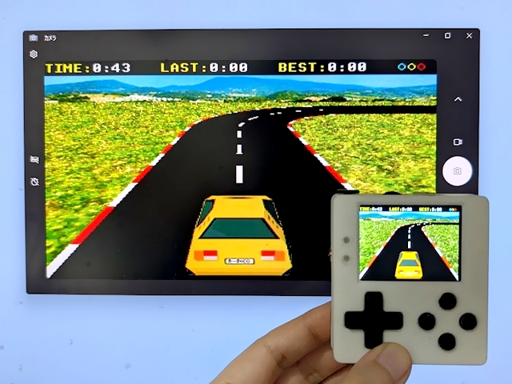

Capturing Screen of PicoPad

Using LcdTap-Pico2 Universal
Connection
The timing between the CS signal edge and the clock/data edges from PicoPad is too short for LcdTap. So connect the LcdTap CS signal to GND.
| LcdTap | Connection |
|---|---|
| RST | PicoPad's RST |
| CS | GND |
| SCLK | PicoPad's SCLK |
| GND | PicoPad's GND |
| DC | PicoPad's DC |
| MOSI | PicoPad's MOSI |
Configuration
Load preset for PicoPad.